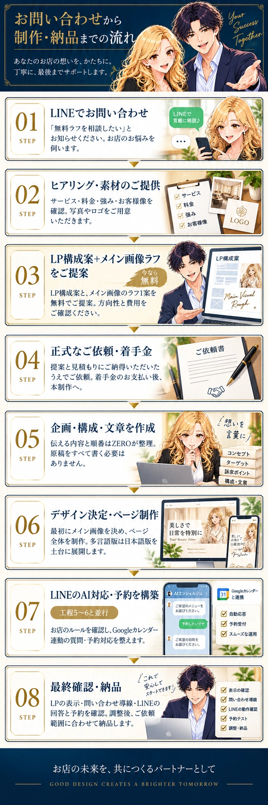
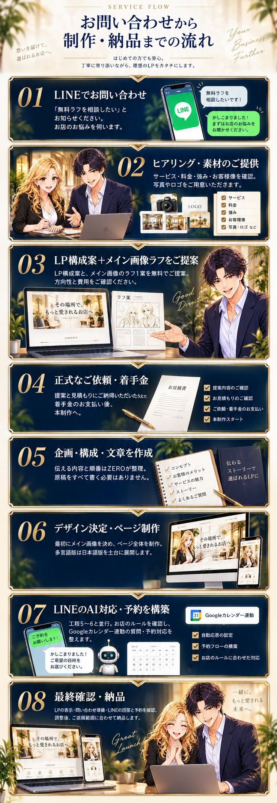
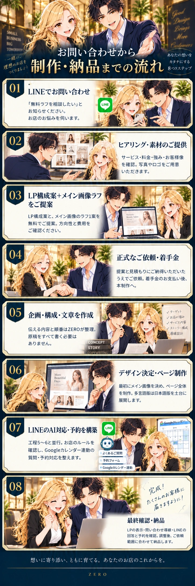
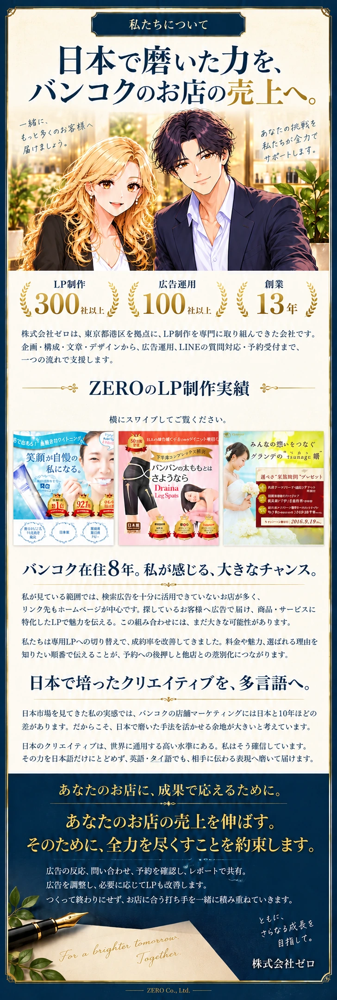
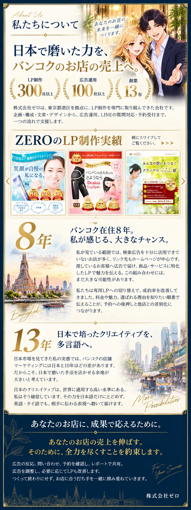
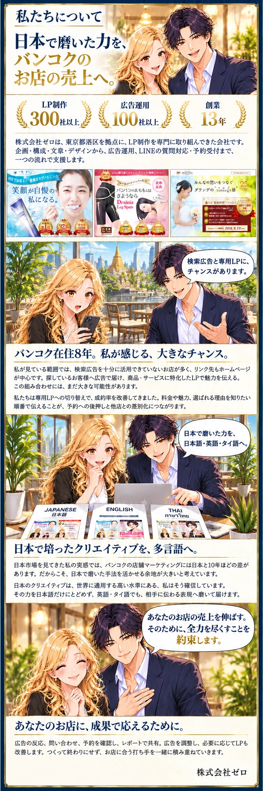
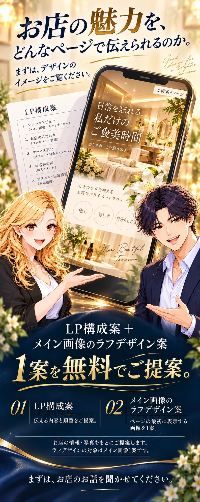
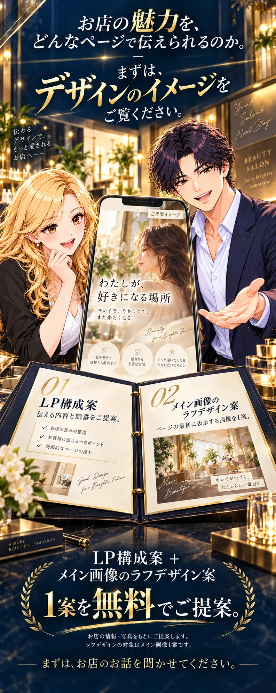
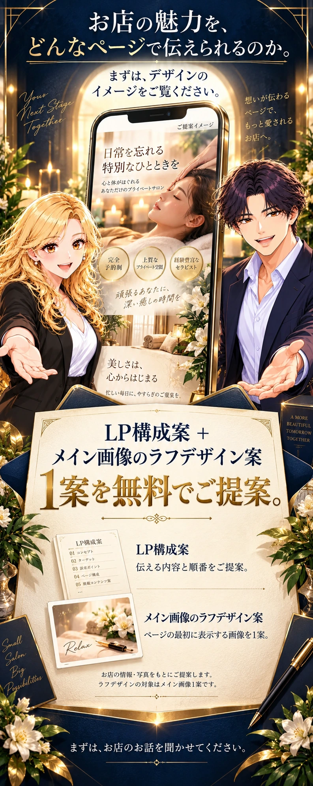

制作フロー A
白いカードで順番を追う
番号を左にそろえ、準備するものや成果物を右に添える構成。人物は必要な場面に登場します。

制作フローはC案を採用。「私たちについて」と無料提案は、組み合わせた追加2案をご確認ください。
01 / 制作フロー
お問い合わせから納品までの8工程を保ち、番号・説明・場面を各枠内にまとめます。
制作フロー A
番号を左にそろえ、準備するものや成果物を右に添える構成。人物は必要な場面に登場します。

制作フロー B
ラフ・見積もり・原稿・LP・LINEを具体的な物として見せる構成。紺の面と金の番号で工程を区切ります。

制作フロー C／採用
斎藤さんとマリの打ち合わせを、各工程の枠内に配置。左右交互の絵と文章で読み進めます。

02 / 私たちについて
会社紹介・制作実績・ZEROのメッセージ・成果への約束・署名を一つにまとめます。文章は3案共通です。
LP制作 300社以上 広告運用 100社以上 創業 13年
株式会社ゼロは、東京都港区を拠点に、LP制作を専門に取り組んできた会社です。企画・構成・文章・デザインから、広告運用、LINEの質問対応・予約受付まで、一つの流れで支援します。
既存17件の制作実績も、この外枠内にまとめます。実装時は現在の制作実績画像を使い、横にスワイプして見られる形にします。
私が見ている範囲では、検索広告を十分に活用できていないお店が多く、リンク先もホームページが中心です。探しているお客様へ広告で届け、商品・サービスに特化したLPで魅力を伝える。この組み合わせには、まだ大きな可能性があります。
私たちは専用LPへの切り替えで、成約率を改善してきました。料金や魅力、選ばれる理由を知りたい順番で伝えることが、予約への後押しと他店との差別化につながります。
日本市場を見てきた私の実感では、バンコクの店舗マーケティングには日本と10年ほどの差があります。だからこそ、日本で磨いた手法を活かせる余地が大きいと考えています。
日本のクリエイティブは、世界に通用する高い水準にある。私はそう確信しています。その力を日本語だけにとどめず、英語・タイ語でも、相手に伝わる表現へ磨いて届けます。
あなたのお店の売上を伸ばす。
そのために、全力を尽くすことを約束します。
広告の反応、問い合わせ、予約を確認し、レポートで共有。広告を調整し、必要に応じてLPも改善します。つくって終わりにせず、お店に合う打ち手を一緒に積み重ねていきます。
株式会社ゼロ
私たちについて A
一つの金の外枠に、紺の扉・実績・アイボリーの手紙をまとめます。約束と署名まで、上から続けて読める構成。

私たちについて B
実績の数字と制作例を大きく見せ、観察・考え・約束へ。大きな数字と余白、細い線で順に読み進めます。

私たちについて C
斎藤さんとマリの漫画を交えながら、実績と考えを説明。一緒に改善する約束まで、同じ外枠でつなぎます。

制作実績のサムネイルはデザイン上の配置イメージです。実装時は現在の正規の制作実績画像を使います。
03 / 最後の無料提案
大きなスマホと具体的な提案物を主役に。もらえるものは「LP構成案＋メイン画像のラフデザイン案1案」です。
最後の無料提案 A
大きなスマホのメイン画像例とLP構成書を同時に見せます。お店の魅力と、無料提案の内容を印象づける構成。

最後の無料提案 B
斎藤さんとマリがスマホを挟み、手前に見開きの提案書。構成案とメイン画像ラフを受け取るイメージを見せます。

最後の無料提案 C
金の光に包まれたスマホと、封筒から開く招待状。無料提案の内容を一枚に集め、特別感を出す構成。

画像内のLPは提案イメージです。追従する赤い相談ボタンは、ページ最下部へ収まる形を維持します。